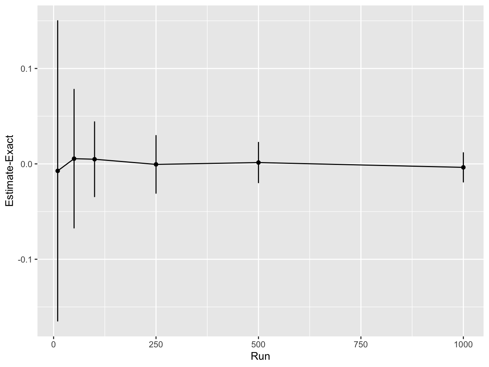
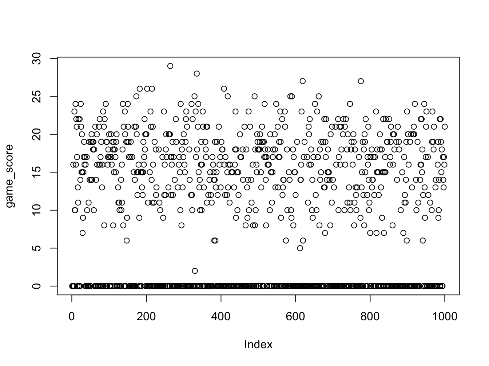

D Solution: Monte Carlo
D.1 Solution: MC accuracy
To solve this problem we will write two functions. The first function will perform a single Monte Carlo estimate of the integral for a given sample size. The second function will call the first function multiple times and compute the accuracy statistics (mean and standard deviation of the error).
This is generally good practice when writing code. Breaking down the problem into smaller functions makes the code easier to read, debug and maintain.
# Function to perform a single Monte Carlo integration estimate
monte_carlo_integral <- function(sample_size, lower = 1, upper = 3,
mean = 1, sd = 2) {
# Simulate normally distributed numbers
sims <- rnorm(sample_size, mean = mean, sd = sd)
# Find proportion of values between lower and upper bounds
mc_estimate <- sum(sims >= lower & sims <= upper) / sample_size
return(mc_estimate)
}
# Function to estimate Monte Carlo accuracy for a given sample size
estimate_mc_accuracy <- function(sample_size, rpts = 100, lower = 1, upper = 3,
mean = 1, sd = 2) {
# Calculate exact value of the integral
mc_exact <- pnorm(q = upper, mean = mean, sd = sd) -
pnorm(q = lower, mean = mean, sd = sd)
# Vector to store results from each repeat
mc_estimates <- rep(0, rpts)
# Repeat the Monte Carlo estimation rpts times
for (j in 1:rpts) {
mc_estimates[j] <- monte_carlo_integral(sample_size, lower, upper, mean, sd)
}
# Return list with accuracy statistics
return(list(
mean_error = mean(mc_estimates - mc_exact),
sd_error = sd(mc_estimates - mc_exact),
estimates = mc_estimates,
exact_value = mc_exact
))
}We have created the two functions, ideally place them in a separate script file and source them in your main script. Now we can use these functions to estimate the accuracy for different sample sizes.
# Define sample sizes to test
sample_sizes <- c(10, 50, 100, 250, 500, 1000)
n_sample_sizes <- length(sample_sizes)
rpts <- 100 # number of repeats for each sample size
# Initialize vectors to store results
accuracy <- rep(0, n_sample_sizes)
accuracy_sd <- rep(0, n_sample_sizes)
# Loop across sample sizes using our function
for (i in 1:n_sample_sizes) {
result <- estimate_mc_accuracy(sample_sizes[i], rpts = rpts)
accuracy[i] <- result$mean_error
accuracy_sd[i] <- result$sd_error
}
cat("Mean errors:", accuracy)#> Mean errors: -0.01234475 -0.01034475 -0.007744746 0.002535254 -0.0003847461 -0.001214746#> Standard deviation of errors: 0.1444565 0.07332645 0.04680758 0.02980586 0.01923062 0.01511281Next, we will plot the results. Here we will make use of ggplot2 a library to create nice plots without much effort. The input need to be a data.frame so we will need to create one based on the data.
# load ggplot
library(ggplot2)
# create a data frame for plotting
df <- data.frame(sample_sizes, accuracy, accuracy_sd)
print(df)#> sample_sizes accuracy accuracy_sd
#> 1 10 -0.0123447461 0.14445649
#> 2 50 -0.0103447461 0.07332645
#> 3 100 -0.0077447461 0.04680758
#> 4 250 0.0025352539 0.02980586
#> 5 500 -0.0003847461 0.01923062
#> 6 1000 -0.0012147461 0.01511281# use ggplot to plot lines for the mean accuracy and error bars
# using the std dev
ggplot(df, aes(x = sample_sizes, y = accuracy)) +
geom_line() +
geom_point() +
geom_errorbar(
aes(ymin = accuracy - accuracy_sd, ymax = accuracy + accuracy_sd),
width = .2,
position = position_dodge(0.05)) +
ylab("Estimate-Exact") +
xlab("Run")
This shows that as the number of Monte Carlo samples is increased, the accuracy increases (i.e. the difference between the estimated integral value and real values converges to zero). In addition, the variability in the integral estimates across different simulation runs reduces.
D.2 MC Expectation
D.2.1 Solution: MC Expectation 1
# simulates a game of 20 spins
play_game <- function() {
# picks a number from the list (1, -1, 2)
# with probability 50%, 25% and 25% twenty times
results <- sample(c(1, -1, 2), 20, replace = TRUE, prob = c(0.5, 0.25, 0.25))
return(sum(results)) # function returns the sum of all the spins
}
# Define the number of runs
runs <- 100
score_per_game <- rep(0, runs) # vector to store outcome of each game
for (it in 1:runs) {
score_per_game[it] <- play_game() # play the game by calling the function
}
expected_score <- mean(score_per_game) # average over all simulations
print(expected_score)#> [1] 14.31D.2.2 Solution: MC Expectation 2
# simulates a game of up to n_spins
play_game <- function(n_spins) {
# picks a number from the list (1, -1, 2)
# with probability 50%, 25% and 25% n_spins times
results <- sample(c(1, -1, 2), n_spins,
replace = TRUE, prob = c(0.5, 0.25, 0.25))
results_sum <- cumsum(results) # compute a running sum of points
# check if the game goes to zero at any point
if (sum(results_sum <= 0)) {
return(0) # return zero
} else {
return(results_sum[n_spins]) # returns the final score
}
}
runs <- 1000
game_score <- rep(0, runs) # vector to store scores in each game played
# for each game
for (it in 1:runs) {
game_score[it] <- play_game(n_spins = 20)
}
print(mean(game_score))#> [1] 9.631
Functions and Arguments
The function play_game has an argument n_spins which allows you to specify the number of spins in the game. This makes the function more flexible, as you can now simulate games with different numbers of spins by simply changing the value of n_spins when calling the function. Note that because it is a function argument, you do not need to define n_spins outside the function before calling it. You can simply pass the desired value directly when you call the function, as shown in the loop where we call play_game(n_spins = 20). This is different from a for loop or while loop where the loop variable needs to be defined before the loop starts.
The games with score zero now corresponds to the number of games where we went bust (or genuinely ended the game with zero).
This is a simple example of how Monte Carlo simulations can be used to estimate the expected value of a random variable. The more simulations you run, the more accurate the estimate will be. You can imagine that this could be used to estimate the expected value of a random variable for biological systems where the underlying distribution is unknown or too complex to model directly. You could even come up with an example considering say mutations in a population of bacteria that have a certain probability of being beneficial, neutral or harmful.
D.2.2.1 Extend the function
We can extend the play_game function to allow for different probabilities and point values.
# updated play_game function
play_game <- function(n_spins, point_values = c(1, -1, 2),
probabilities = c(0.5, 0.25, 0.25)) {
# picks a number from the point_values
# with given probabilities n_spins times
results <- sample(point_values, n_spins,
replace = TRUE, prob = probabilities)
results_sum <- cumsum(results) # compute a running sum of points
# check if the game goes to zero at any point
if (sum(results_sum <= 0)) {
return(0) # return zero
} else {
return(results_sum[n_spins]) # returns the final score
}
}Now we can experiment with different parameters. To do that effectively we will define a set of scenarios with different point values and probabilities. We will then loop through these scenarios, simulate the game multiple times for each scenario, and compute the expected score. Finally, we will create a table to summarize the results.
# Define scenarios for experimentation
scenarios <- list(
scenario1 = list(
point_values = c(1, -1, 2),
probabilities = c(0.5, 0.25, 0.25),
description = "Original Game"
),
scenario2 = list(
point_values = c(1, -1, 2),
probabilities = c(0.4, 0.3, 0.3),
description = "Higher chance of non-positive outcomes"
),
scenario3 = list(
point_values = c(2, -2, 4),
probabilities = c(0.5, 0.25, 0.25),
description = "Higher stakes"
),
scenario4 = list(
point_values = c(1, -1, 5),
probabilities = c(0.5, 0.25, 0.25),
description = "High reward for one outcome"
)
)
# Initialize a data frame to store results
results_table <- data.frame(
Scenario = character(),
Expected_Score = numeric(),
stringsAsFactors = FALSE
)
runs <- 1000
# Loop through each scenario
for (scenario_name in names(scenarios)) {
scenario <- scenarios[[scenario_name]]
game_scores <- replicate(runs, play_game(
n_spins = 20,
point_values = scenario$point_values,
probabilities = scenario$probabilities
))
mean_score <- mean(game_scores)
# Add result to the table
results_table <- rbind(results_table, data.frame(
Scenario = scenario$description,
Expected_Score = mean_score
))
}
# Print the results table
knitr::kable(
results_table,
caption = "Experimenting with different game parameters"
)| Scenario | Expected_Score |
|---|---|
| Original Game | 9.285 |
| Higher chance of non-positive outcomes | 8.507 |
| Higher stakes | 18.604 |
| High reward for one outcome | 20.172 |